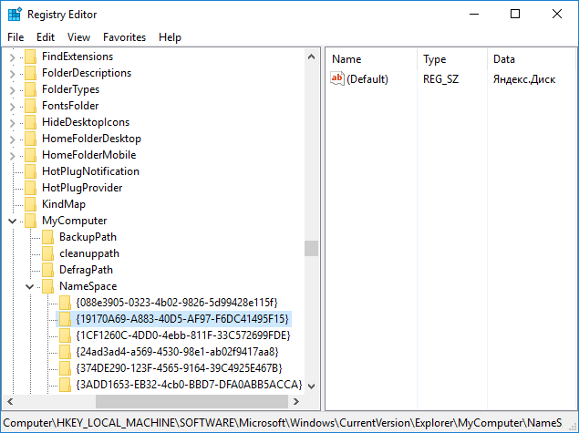

При установке Яндекс диск прописывается в проводнике и в папке мой компьютер. Лично мне не нравится это, т.к. я считаю, что иконки в левой панели проводника вполне достаточно. Чтобы удалить Яндекс диск из моего компьютера, нужнов реестре удалить раздел HKEY_LOCAL_MACHINE\SOFTWARE\Microsoft\Windows\CurrentVersion\Explorer\MyComputer\NameSpace\{19170A69-A883-40D5-AF97-F6DC41495F15}.

Если это не помогло, то удаляем также HKEY_LOCAL_MACHINE\SOFTWARE\WOW6432Node\Microsoft\Windows\CurrentVersion\Explorer\MyComputer\NameSpace\{19170A69-A883-40D5-AF97-F6DC41495F15} и HKEY_CURRENT_USER\Software\Microsoft\Windows\CurrentVersion\Explorer\MyComputer\NameSpace\{19170A69-A883-40D5-AF97-F6DC41495F15}
Так выглядит файл для удаления Яндекс диска из моего компьютера:
REGEDIT4
[-HKEY_LOCAL_MACHINE\SOFTWARE\Microsoft\Windows\CurrentVersion\Explorer\MyComputer\NameSpace\{19170A69-A883-40D5-AF97-F6DC41495F15}]
[-HKEY_LOCAL_MACHINE\SOFTWARE\WOW6432Node\Microsoft\Windows\CurrentVersion\Explorer\MyComputer\NameSpace\{19170A69-A883-40D5-AF97-F6DC41495F15}]
[-HKEY_CURRENT_USER\Software\Microsoft\Windows\CurrentVersion\Explorer\MyComputer\NameSpace\{19170A69-A883-40D5-AF97-F6DC41495F15}]
[HKEY_CLASSES_ROOT\CLSID\{11C9DD7B-CCF5-4502-90A1-FEE8889976D5}]
"System.IsPinnedToNameSpaceTree"=dword:00000000
Если нужно вернуть Яндекс диск в мой компьютер, то используйте этот файл:
REGEDIT4
[HKEY_LOCAL_MACHINE\SOFTWARE\WOW6432Node\Microsoft\Windows\CurrentVersion\Explorer\MyComputer\NameSpace\{19170A69-A883-40D5-AF97-F6DC41495F15}]
@="Яндекс.Диск"
[HKEY_LOCAL_MACHINE\SOFTWARE\Microsoft\Windows\CurrentVersion\Explorer\MyComputer\NameSpace\{19170A69-A883-40D5-AF97-F6DC41495F15}]
@="Яндекс.Диск"
[HKEY_CURRENT_USER\SOFTWARE\Microsoft\Windows\CurrentVersion\Explorer\MyComputer\NameSpace\{19170A69-A883-40D5-AF97-F6DC41495F15}]
@="Яндекс.Диск"
[HKEY_CLASSES_ROOT\CLSID\{11C9DD7B-CCF5-4502-90A1-FEE8889976D5}]
"System.IsPinnedToNameSpaceTree"=dword:00000001
Для удобства я выложил готовые файлы реестра для внесения изменений